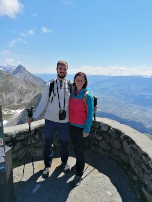
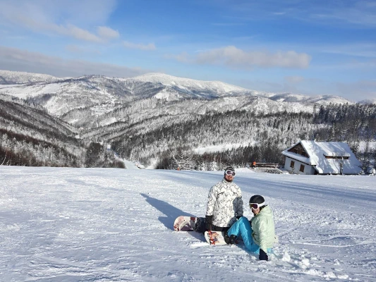
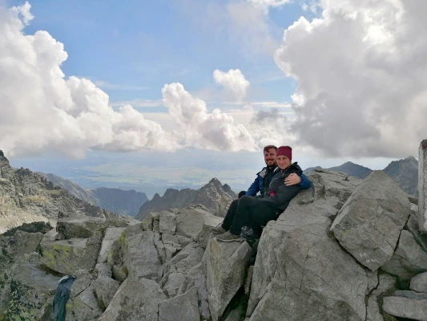
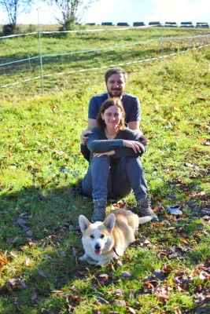

Náš příběh
20. leden 2022. V restauraci Zlatý klas se chystal začít seznamovací pub quiz. On tam byl na pozvání organizátora-známého a jí se tam ani moc nechtělo. Oba ale přišli s velkým předstihem, a tak se spolu dali do řeči ještě před samotným kvízem. A protože to byla konverzace příjemná, rozhodli se sejít i další večer a potom znovu a znovu a pokud se nerozešli, tak jsou spolu dodnes.




Informace
Vše se nachází v okolí Dvora Králové nad Labem, pro přesun ale doporučujeme mít auto. S parkováním by neměly být žádné obtíže.
Obřad
Obřad proběhne v hospitálu Kuks, v klášterním kostele Nejsvětější Trojice. Parkovat lze u Hospody Na sýpce, která se nacházi hned vedle hospitálu. Pokud by u hospody již nebylo místo, ve vesničce Kuks je placené parkovište (60Kč na celý den) odkud se pěšky dostanete do hospitálu za přibližne 15 minut. Doporučujeme nechat si časovou rezervu, kterou pak můžete využít i na prohlídku nádvoří a zahrad hospitálu.
Hostina
Následovat bude hostina a zábava v Penzionu na Faře v Dubenci. Cesta z Kuksu do Dubence zabere autem přibližne 20 minut. Penzion nabízí možnost ubytování, pokud byste o něj měli zájem, dejte nám vědet prostřednictvím dotazníku. První noc je na nás! 😃
Program
Obřad začne v 14:00. Časový harmonogram hostiny a zábavy bude ješte upřesněn.